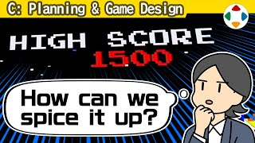
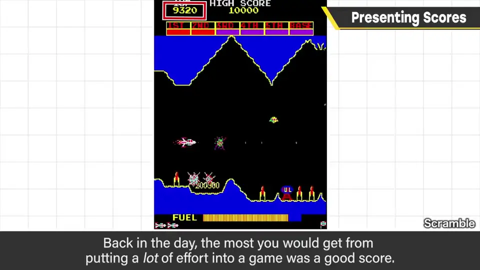
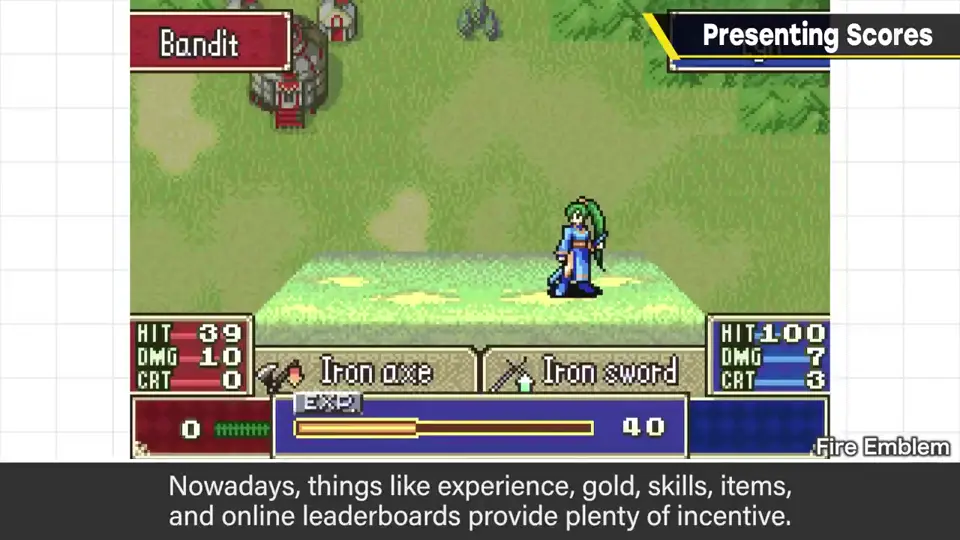
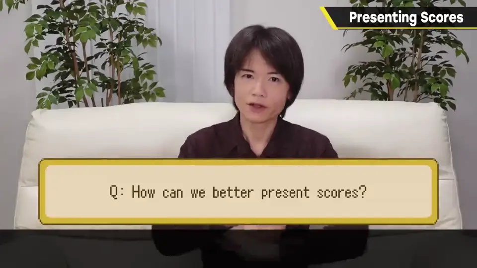
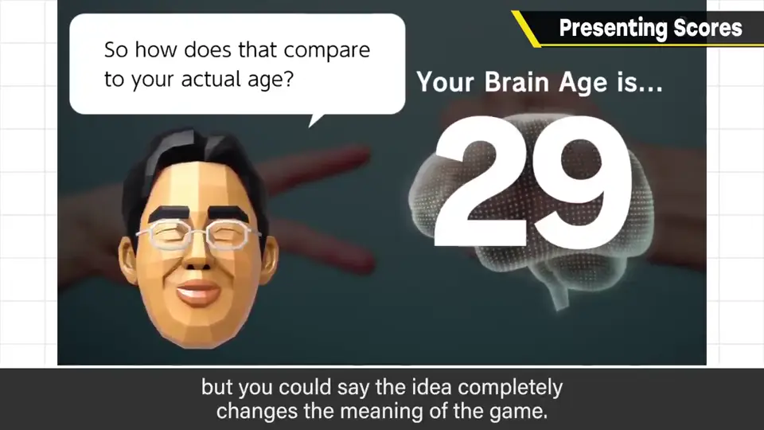
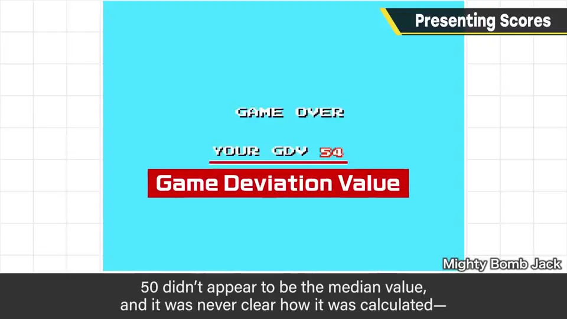
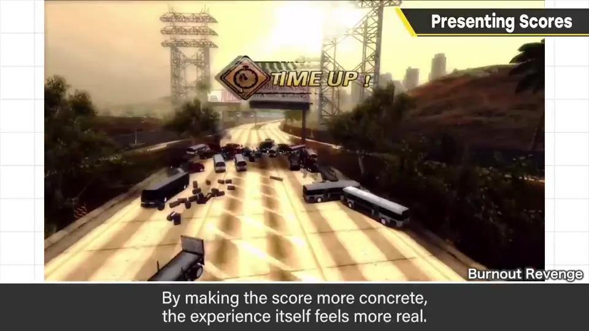
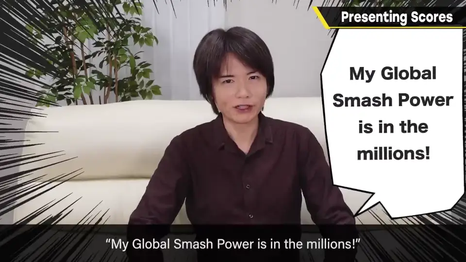

速览
以前的游戏拼命玩能得到的几乎只有分数：不为提高分数努力就不好玩，所以挺重要。游戏规模稍大后，「往前推进」的目的站到前面，分数意义变淡；现在有经验值、金币、技能、道具、在线排行榜等大量要素，除一部分人外，很难争相追求单纯的分数。但还是想让拿到好分数更值得开心——拼命才让游戏好玩。那么怎样呈现才能让得分更好？想想看——不太容易想出新东西吧。樱井个人认为最犀利的是所谓「脑锻炼」（川岛教授那款）：分数的名字叫「脑年龄」，可以说是连游戏意义都改变的点子。游戏嘛，练习就会变好，这是当然的，但它表现得好像有意义一样。Wii Fit 也有显示推测年龄的要素，低了会挺开心。（日本常有测体脂等参数推算体年龄的体重计，大概早于这些游戏。）其他想到的：很老的作品，特库摩《Mighty Bomb Jack》《所罗门之钥》的「游戏偏差值」，游戏结束时出现，不像以 50 为中心，不太懂基准，但能感到脱离单纯分数的东西。《Burnout》系列的撞车模式以被害总额为名竞分，和现实挂钩，感觉更真实（怪兽游戏、《Thrill Drive》也有被害总额）。《大乱斗》的世界战斗力也是对分数概念的一番改造：「我的世界战斗力有几百万哦」——说出来大概也会情绪高涨。要点是各自套用某种尺度来下功夫；至少不能把分数的存在当成理所当然，即使结果按普通分数处理，也要把呈现方式想到极致。快速计数上升之类的规格本身也有爽快感。
1. 分数的意义变淡了 0:03
以前的游戏，拼命玩能得到的几乎只有分数。不为提高分数而努力就不好玩，所以它相当重要。


游戏规模稍大后，「往前推进」的目的站到了前面，分数的意义就淡了。现在有经验值、金钱、技能、道具、在线排行榜等大量要素；除了一部分人，单纯的分数很难让人争相刷高。

2. 脑年龄：改变游戏意义的点子 1:09
樱井个人认为最犀利的是所谓「脑锻炼」（川岛教授那款）。分数的名字叫「脑年龄」——这可说是连游戏意义都改变了的点子。

游戏嘛，练习就会变好是理所当然的，但它表现得好像有意义一样。Wii Fit 也有显示推测年龄的要素，数字低一点就挺开心。这也是一种分数的呈现方式。
另外日本常见测量体脂等参数、推算体年龄的体重计，樱井认为不是受这些游戏影响，而是更早就有了。
3. 更多例子 2:12
| 作品 | 分数的「尺度」 |
|---|---|
| 特库摩《Mighty Bomb Jack》《所罗门之钥》 | 游戏偏差值：游戏结束时出现；不像以 50 为中心，基准不明，但有脱离单纯分数的感觉 |
| 《Burnout》系列撞车模式 | 被害总额：与现实挂钩，感受更真实（怪兽游戏、《Thrill Drive》也有） |
| 《大乱斗》 | 世界战斗力：「我的世界战斗力有几百万哦」——说出口就情绪高涨 |



4. 别把分数当理所当然 3:20
另外，快速计数上升之类的规格本身也有爽快感。
自测题
1. 为什么现在分数的意义变淡了？
游戏规模变大后「推进」成了主要目的，还有经验值、金钱、技能、排行榜等众多激励。 0:20
2. 樱井认为最犀利的分数呈现是什么？为什么？
《脑锻炼》的「脑年龄」：把练习变好表现得像有意义一样，连游戏的意义都改变了。 1:09
3. 列举两个「给分数套上尺度」的例子。
例：游戏偏差值（Mighty Bomb Jack、所罗门之钥）、被害总额（Burnout）、世界战斗力（大乱斗）、Wii Fit 的年龄。 2:12